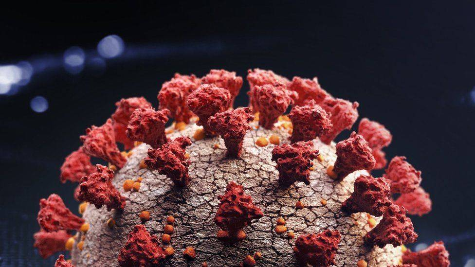
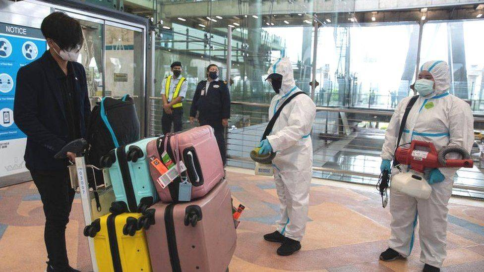
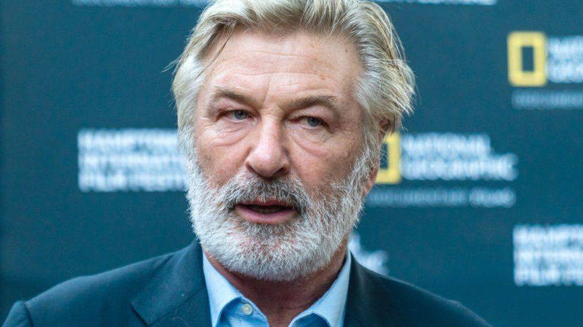

Наша профессиональная команда
Во главе PROJECT стоят настоящие эксперты в области инвестирования. Топ-менеджеры фонда обладают более чем 10-летним опытом работы в крупных финансовых учреждениях, начиная от банков и бирж, и заканчивая инвестиционными фондами. Мы уверены, что от команда – главный двигатель любой компании.
Узнать большеКто нам доверяет
За годы своей работы фонд PROJECT сумел приобрести обширную клиентскую базу. Нашими услугами пользуются физические и юридические лица, отдельные люди и целые семь, представители малого бизнеса и большие корпорации. Благодаря опыту и постоянному развитию мы оказываем услуги инвесторам с различными целями. Индивидуальный подход наших специалистов к каждому клиенту обеспечивает реализацию любых инвестиционных планов, будь то защита капитала от инфляции или накопление средств на пенсию.
Всесторонний подход к инвестированию
Мы предпочитаем всесторонний подход к инвестированию, чтобы вы могли использовать все возможности современного рынка в максимальной степени. Благодаря наличию офисов в крупнейших финансовых центрах и мультинациональной команде специалистов, мы помогаем реализовать инвестиционные цели клиентам с любых уголков планеты. Профессионалы PROJECT всегда в курсе микро- и макроэкономической обстановки, изменений в налогообложении и законодательстве различных юрисдикций и других важных факторов, которые могут повлиять на ваши инвестиционный процесс. Мы верим в то, что только всесторонний подход позволяет учесть все детали инвестирования и достичь максимально высоких результатов.
Узнать большеИндивидуальные стратегии для достижения ваших целей
Мы в PROJECT верим, что каждый клиент приходит к нам со своими уникальными запросами и требованиями. Именно по этой причине специалисты фонда создают индивидуальные инвестиционные стратегии для каждого. В них учитываются все тонкости и пожелания инвесторов. К примеру, для клиентов, которые выбирают краткосрочные капиталовложения и для клиентов, которые хотят вложить средства на несколько лет, стратегии будут кардинально отличаться.
Узнать большеКонсультации от профессионалов
PROJECT оказывает профессиональные консультационные услуги. Мы стараемся быть проводниками в мир финансов для клиентов с любыми запросами. Будь то накопление капитала на покупку нового дома или необходимость привлечения капитала для реорганизации большого предприятия, мы разработаем для вас наиболее подходящий инвестиционный план. Нашими консультационными услугами пользуются крупные компании и физические лица по всему миру.
Узнать большеИнвестирование в IPO
IPO или первичное размещение акций компанией на бирже, – это отличная возможность для инвестора получить сверхвысокую прибыль. Специалисты PROJECT внимательно изучают организации, которые только готовятся стать публичными, и находят наиболее перспективные из них для капиталовложений. Вы можете зарабатывать на покупке акций проверенных и перспективных компаний, одобренных нашими аналитиками.
Узнать большеКорпоративная культура PROJECT
Фонд PROJECT – это международная организация с внушительным опытом работы в области инвестирования. За годы присутствия на рынке у нас сформировалась своя уникальная корпоративная культура, в которой главными принципами являются честность, открытость, профессионализм и верность единой цели. Приверженность своей культуре помогла нам приобрести хорошую репутацию как среди клиентов, так и среди коллег. Мы всегда с удовольствием делимся своими знаниями и перенимаем опыт других участников рынка на профильных мероприятиях. Также в PROJECT проходят внутренние мероприятия, где участники бизнес-процесса с разных стран и городов обмениваются навыками и методами решения различных сложных задач.
Узнать большеНаши цели
Только постоянный рост и развитие позволяет нам выполнять ее безукоризненно из года в год. Мы обеспечиваем не только профессиональное стратегическое планирование, но и своевременное реагирование на малейшие рыночные колебания. Опыт и наличие инновационной технологической базы позволяет нам извлекать пользу как из повышения, так и из падения цен на активы. Оперативное реагирование – залог вашего успеха и стабильного дохода.
Узнать большеВсегда в поисках новых талантов
PROJECT – быстрорастущий фонд с филиалами по всему миру. Именно по этой причине мы пребываем в постоянном поиске новых звезд в мире финансов. В команду мы принимаем как профессионалов с большим опытом, так и новичков, готовых расти и развиваться вместе с нами. PROJECT обеспечивает профессиональные стажировки для талантливых специалистов с возможностью дальнейшего перевода в наш штат. Это уникальная возможность заглянуть за завесу инвестиционной сферы и стать ее неотъемлемой частью.
Узнать большеОтветственное инвестирование
PROJECT следует международной концепции ответственного инвестирования. Наша задача заключается в эффективном управлении портфелем активов в интересах создания общей ценности для инвесторов и широкого круга заинтересованных сторон в долгосрочной перспективе. Мы интегрируем в практику принятие стратегических решений ESG-факторов (Environmental, Social and Governance). Они применяются как при выборе приоритетных направлений для капиталовложений, так и при взаимодействии с ключевыми заинтересованными сторонами (инвесторами, сотрудниками, государствами).
Узнать большеИсследования и аналитика
Исследования финансового рынка – неотъемлемая часть работы фонда PROJECT. В нашем штате работают профессиональные аналитики и эксперты, которые могут извлекать полезную информацию из исторических и статистических данных, проводить экспертный технический, фундаментальный и волновой анализ. Все это позволяет составлять наиболее эффективные финансовые стратегии и своевременно реагировать на малейшие изменения рынка, получая из них максимальную выгоду.
Узнать большеНовости
Главный инструмент современного инвестора – актуальная проверенная информация. Чтобы вы всегда были во всеоружии и могли принимать правильные решения, мы регулярно публикуем свежие новости.
Узнать больше

Omicron: Индия сообщает о первых случаях нового варианта Covid
Двое мужчин в южном индийском штате Карнатака дали положительный результат на вариант коронавируса Омикрон.

Таиланд: газета осудила заголовок "охотится на африканцев"
На своей первой странице и на веб-сайте газета Bangkok Post опубликовала заголовок «Правительство охотится за африканскими посетителями».

Алек Болдуин признал, что карьера может быть закончена из-за роковой стрельбы
«Кто-то всадил в ружье боевую пулю», - сказал он.